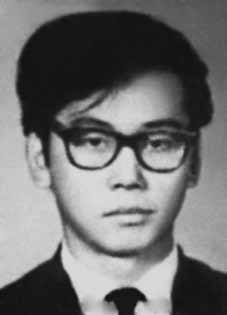

Yoshitane
Fujimori
CIRCUNSTÂNCIAS DA MORTE
Yoshitane Fujimori desapareceu no dia 5 de dezembro de 1970. De acordo com a versão oficial dos fatos apresentada pelos órgãos de repressão do Estado na ocasião, no início de dezembro de 1970, Yoshitane Fujimori estaria trafegando de carro no entorno da Praça Santa Rita de Cássia, em São Paulo, na companhia de um companheiro de militância da VPR, Edson Neves Quaresma, quando os dois teriam sido identificados por agentes do Destacamento de Operações de Informações – Centro de Operações de Defesa Interna de São Paulo (DOI-CODI/SP).
A partir daí teria se seguido um confronto armado, que resultou na morte dos dois militantes. Passados mais de 40 anos do desaparecimento de Yoshitane Fujimori, as investigações realizadas pela Comissão de Familiares sobre Mortos e Desaparecidos Políticos e, mais recentemente, pela Comissão Nacional da Verdade (CNV) revelaram a existência de inúmeros elementos de convicção que permitem apontar que a versão divulgada à época não se sustenta.
Em depoimento à CEMDP, Ivan Akselrud de Seixas, que esteve preso no DOI-CODI na ocasião dos fatos, relatou o que ouviu dos policiais Dirceu Gravina e “Oberdan”, que estiveram no local da morte de Yoshitane após o acontecido.
Segundo os agentes do DOI-CODI, um motorista de táxi teria testemunhado os acontecimentos e lhes contado que os agentes policiais do DOPS/SP interceptaram o carro onde estavam Yoshitane e Edson, e logo em seguida começaram a metralhar o veículo dos militantes. Embora os militantes tenham conseguido sair do carro, não tiveram tempo de reagir, pois foram logo atingidos pelos disparos.
Yoshitane Fujimori tombou morto no meio da Praça Santa Rita de Cássia, enquanto que Edson Quaresma conseguiu escapar por uma rua paralela. Entretanto, logo em seguida Edson foi capturado e conduzido de volta à Praça, onde foi agredido por policiais até a morte. Em seguida, os agentes teriam colocado os corpos no porta-malas da viatura e deixado o local em alta velocidade.
Os acontecimentos que envolvem a morte de Yoshitane e de Edson Quaresma suscitaram novas investigações quando os familiares de ambos os militantes apresentaram processos junto à CEMDP.
No voto apresentado pela relatora do processo, Suzana Keniger Lisbôa, há referência à possibilidade de que a execução dos dois militantes possa estar relacionada à necessidade de se manter em segredo a atuação de cabo Anselmo como agente infiltrado das forças de repressão junto às organizações de resistência, e que mantinha estreita relação com Edson Quaresma. A CEMDP solicitou ao perito Celso Nenevê que analisasse laudos periciais relacionados à morte de Yoshitane.
De acordo com os estudos do Dr. Celso Nenevê, a análise da trajetória dos tiros demonstra que três dos quatro projéteis que penetraram na face direita de Fujimori foram disparados com o militante deitado ou caído. A CEMDP considerou que Yoshitane foi executado sob a custódia do Estado.
A certidão de óbito de Yoshitane Fujimori declara que ele foi enterrado como indigente no Cemitério de Vila Formosa, São Paulo, com nome falso. Diante da morte e ausência de identificação de seus restos mortais, a Comissão Nacional da Verdade, ao conferir tratamento jurídico mais adequado ao caso, entende que Yoshitane Fujimori permanece desaparecido.
Yoshitane Fujimori disappeared on December 5, 1970. According to the official version of events presented by the State repression bodies at the time, at the beginning of December 1970, Yoshitane Fujimori was traveling by car around Praça Santa Rita de Cássia, in São Paulo, in the company of a fellow VPR activist, Edson Neves Quaresma, when the two were identified by agents from the Detachment of Information Operations – São Paulo Internal Defense Operations Center (DOI-CODI/SP).
An armed confrontation then ensued, which resulted in the death of the two militants. More than 40 years after the disappearance of Yoshitane Fujimori, investigations carried out by the Commission of Relatives on Political Deaths and Disappearances and, more recently, by the National Truth Commission (CNV) revealed the existence of numerous elements of conviction that allow us to point out that the version published at the time is not sustainable.
In a statement to CEMDP, Ivan Akselrud de Seixas, who was detained at DOI-CODI at the time of the events, reported what he heard from police officers Dirceu Gravina and “Oberdan”, who were at the scene of Yoshitane's death after the incident.
According to DOI-CODI agents, a taxi driver had witnessed the events and told them that DOPS/SP police agents intercepted the car containing Yoshitane and Edson, and soon after started machine-gunning the militants' vehicle. Although the militants managed to get out of the car, they did not have time to react, as they were immediately hit by gunfire.
Yoshitane Fujimori fell dead in the middle of Praça Santa Rita de Cássia, while Edson Quaresma managed to escape through a parallel street. However, shortly afterwards Edson was captured and taken back to the Square, where he was beaten to death by police officers. The agents then placed the bodies in the trunk of the vehicle and left the scene at high speed.
The events surrounding the deaths of Yoshitane and Edson Quaresma sparked new investigations when the families of both militants filed lawsuits with the CEMDP.
In the vote presented by the case's rapporteur, Suzana Keniger Lisbôa, there is reference to the possibility that the execution of the two militants may be related to the need to keep secret the role of Corporal Anselmo as an infiltrated agent of the repression forces with resistance organizations, and who maintained a close relationship with Edson Quaresma. CEMDP asked expert Celso Nenevê to analyze expert reports related to Yoshitane's death.
According to studies by Dr. Celso Nenevê, the analysis of the trajectory of the shots shows that three of the four projectiles that penetrated Fujimori's right face were fired while the militant was lying down or fallen. CEMDP considered that Yoshitane was executed in State custody.
Yoshitane Fujimori's death certificate states that he was buried as a pauper in the Vila Formosa Cemetery, São Paulo, under a false name. Given his death and the lack of identification of his remains, the National Truth Commission, when granting more appropriate legal treatment to the case, understands that Yoshitane Fujimori remains missing.
Yoshitane Fujimori desapareció el 5 de diciembre de 1970. Según la versión oficial de los hechos presentada por los órganos de represión del Estado de la época, a principios de diciembre de 1970, Yoshitane Fujimori viajaba en automóvil por la Plaza Santa Rita de Cássia, en São Paulo, en compañía de un compañero militante del VPR, Edson Neves Quaresma, cuando ambos fueron identificados por agentes del Destacamento de Operaciones de Información – Centro de Operaciones de Defensa Interna de São Paulo. (DOI-CODI/SP).
Se produjo entonces un enfrentamiento armado que se saldó con la muerte de los dos militantes. A más de 40 años de la desaparición de Yoshitane Fujimori, investigaciones realizadas por la Comisión de Familiares sobre Muertes y Desapariciones Políticas y, más recientemente, por la Comisión Nacional de la Verdad (CNV) revelaron la existencia de numerosos elementos de convicción que permiten señalar que la versión publicada en su momento no es sustentable.
En declaraciones al CEMDP, Ivan Akselrud de Seixas, detenido en el DOI-CODI en el momento de los hechos, relató lo que escuchó de los agentes de policía Dirceu Gravina y “Oberdan”, que se encontraban en el lugar de la muerte de Yoshitane después del incidente.
Según agentes del DOI-CODI, un taxista había presenciado los hechos y les dijo que agentes de policía del DOPS/SP interceptaron el coche en el que viajaban Yoshitane y Edson, y poco después comenzaron a ametrallar el vehículo de los militantes. Aunque los militantes lograron salir del vehículo, no tuvieron tiempo de reaccionar, ya que inmediatamente fueron alcanzados por disparos.
Yoshitane Fujimori cayó muerto en plena plaza Santa Rita de Cássia, mientras que Edson Quaresma logró escapar por una calle paralela. Sin embargo, poco después Edson fue capturado y llevado de regreso a la plaza, donde agentes de policía lo mataron a golpes. Acto seguido, los agentes colocaron los cadáveres en el maletero del vehículo y abandonaron el lugar a gran velocidad.
Los hechos que rodearon las muertes de Yoshitane y Edson Quaresma provocaron nuevas investigaciones cuando las familias de ambos militantes presentaron demandas ante el CEMDP.
En la votación presentada por la relatora del caso, Suzana Keniger Lisbôa, se hace referencia a la posibilidad de que la ejecución de los dos militantes pueda estar relacionada con la necesidad de mantener en secreto el papel del cabo Anselmo como agente infiltrado de las fuerzas de represión en las organizaciones de resistencia, y que mantenía una estrecha relación con Edson Quaresma. El CEMDP pidió al experto Celso Nenevê que analizara peritajes relacionados con la muerte de Yoshitane.
Según estudios del doctor Celso Nenevê, el análisis de la trayectoria de los disparos muestra que tres de los cuatro proyectiles que penetraron el rostro derecho de Fujimori fueron disparados mientras el militante se encontraba acostado o caído. El CEMDP consideró que Yoshitane fue ejecutado bajo custodia del Estado.
El certificado de defunción de Yoshitane Fujimori indica que fue enterrado como indigente en el cementerio de Vila Formosa, São Paulo, con un nombre falso. Ante su muerte y la falta de identificación de sus restos, la Comisión Nacional de la Verdad, al otorgar un tratamiento jurídico más adecuado al caso, entiende que Yoshitane Fujimori continúa desaparecido.